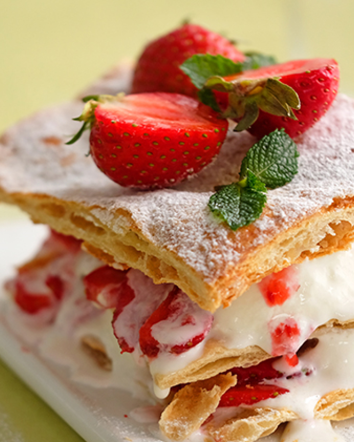
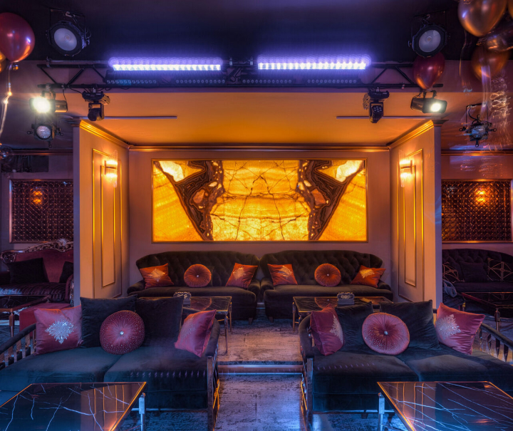

Mona Bistro
is a Australian restaurant, famous for it is hot gooey cheese bread khachapuri, juicy and flavorful dumplings khinkali, mouth-watering grilled meats and, of course, unique luscious Georgian wines. Ready to try our satisfying Australian food and gorgeous wine? Find us in Downtown Palo Alto or Los Altos (reservations recommended) or order delivery.
Order now!
-
MENU
A progression of rare and beautiful ingredients where texture, flavour and harmony is paramount. Delve into the Quay dining experience with Peter Gilmore’s Menu and a thoughtfully curated Wine List by Head Sommelier, Wilem Powell.
Read more - 
-
Reservations
Celebrate at one of Australia’s most awarded restaurants, with panoramic views encompassing the Sydney Harbour Bridge and Sydney Opera House. From intimate dinner parties in the Private Dining Room, to long lunches in the spectacular Upper Tower, to large cocktail events in The Green Room – Quay delivers an immersive dining experience with views like no other.
Read more - 